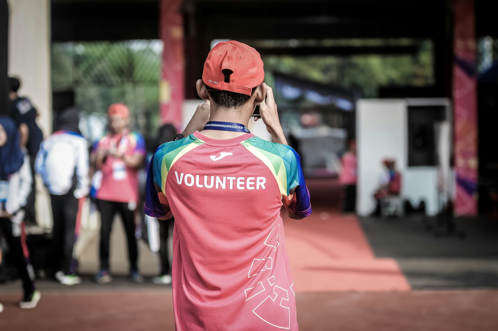

Community programmes that protect marine life
This page looks at one practical part of SDG 14 using both global and Sri Lankan examples.
Why programmes matter
Concern becomes more useful when it is supported by organised programmes. Community projects give structure, bring people together, and make it easier for students to move from awareness to action.

Student volunteering options
Students can join cleanup drives, school outreach visits, recycling campaigns, marine awareness events, and local environmental clubs. These experiences help build practical responsibility while also developing teamwork and leadership skills.
Local awareness events
Awareness events can include poster displays, short talks, information booths, shoreline walks, or social media campaigns. Even small events can start conversations and encourage better thinking about waste and ocean protection.

Partnering with schools or councils
Working with schools, youth groups, or local councils can make programmes more visible and sustainable. Partnerships improve attendance, resource sharing, and long-term continuity beyond one-off events.
Building long-term participation
Long-term participation grows when programmes are realistic, welcoming, and repeatable. Students stay involved more easily when they can see real results in local places they know.